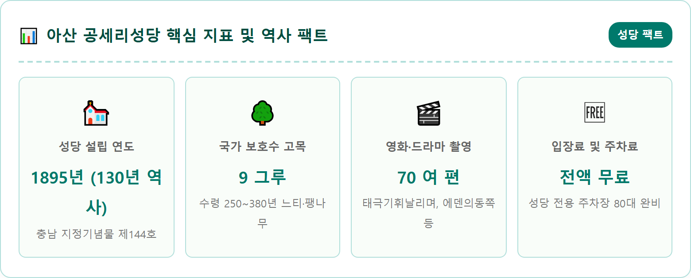
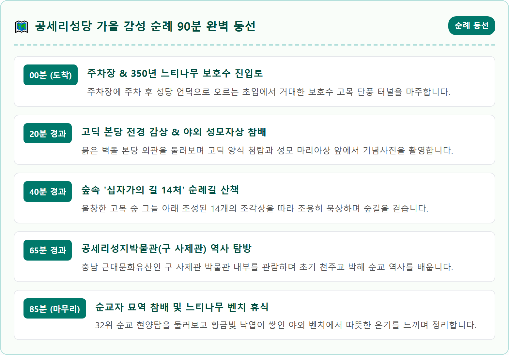
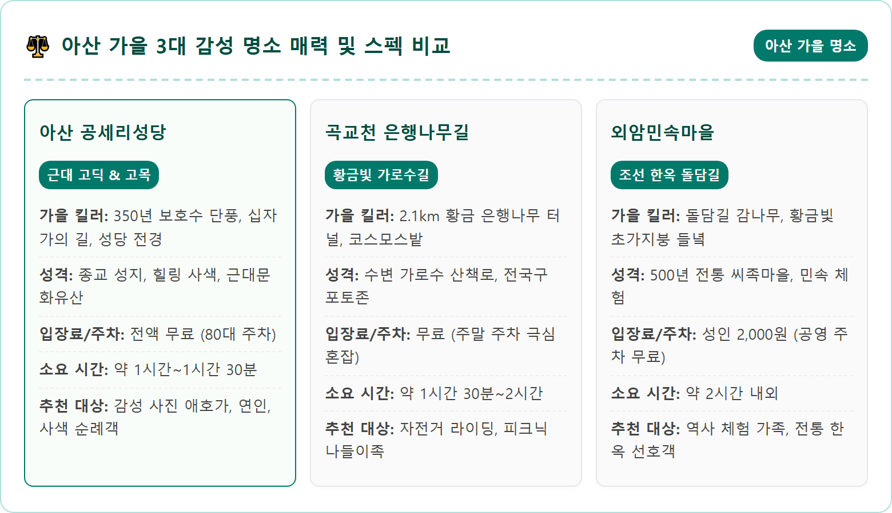
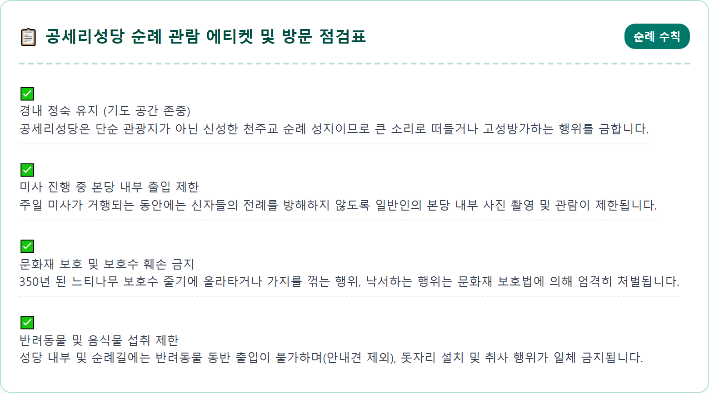
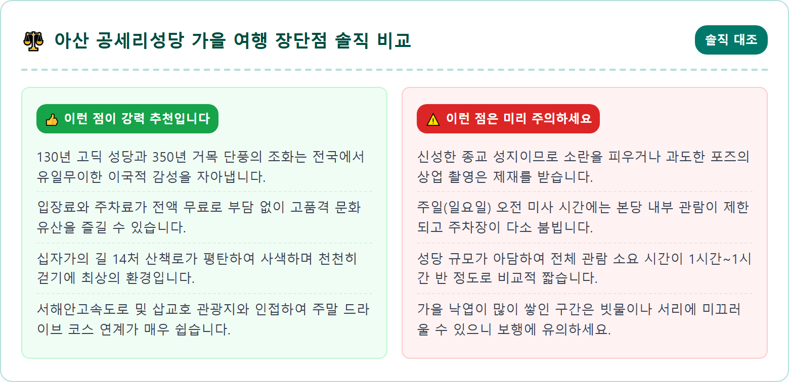
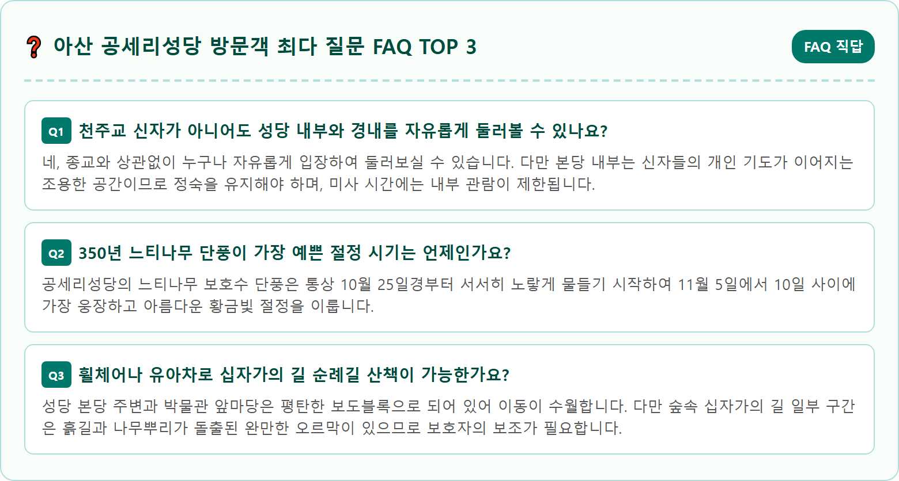

An iconic autumn view of the historic Gongseri Catholic Church in Asan, South Korea. The beautiful red brick gothic revival church with a central tall bell spire stands gracefully atop a gentle green hill. Surrounding the church are magnificent centuries-old protected zelkova trees (over 350 years old) with wide spreading canopies ablaze in brilliant orange, amber, and golden yellow autumn foliage. Fallen golden leaves carpet the neat cobblestone pathway leading to the church entrance. Soft, warm autumn sunlight filtering through branches, creating an ethereal, peaceful, and sacred ambiance. Ultra-realistic architecture and landscape photography, 8k resolution, crisp detail, cinematic depth of field.

충청남도 아산시 인주면 공세리의 고즈넉한 언덕 위에 자리 잡은 공세리성당은 조선 시대 충청도 일대의 조세를 거두어 보관하던 '공진창(貢津倉)' 터에 세워진 유서 깊은 천주교 성지입니다. 1895년 파리외방전교회 에밀 드비즈(한국명 박의도) 신부가 부임하여 한옥 성당으로 시작한 공세리성당은 1922년 드비즈 신부가 직접 설계하고 지휘하여 지금의 붉은 벽돌 고딕 양식 본당으로 완공되었습니다. 130년에 이르는 장구한 세월 동안 원형을 완벽하게 보존해 온 공세리성당은 1998년 충청남도 지정기념물 제144호로 지정되었습니다.
봄의 화사한 벚꽃, 여름의 짙푸른 녹음, 겨울의 순백 설경도 저마다 아름답지만, 공세리성당이 지닌 고유의 성스러운 아우라가 가장 깊게 빛을 발하는 계절은 단연 가을입니다. 성당을 에워싸고 있는 수백 년 수령의 고목들이 주황빛과 황금빛 단풍으로 물들고, 붉은 벽돌과 회색 석조 마감재가 조화를 이룬 고딕 성당의 뾰족한 종탑 위로 높고 푸른 가을 하늘이 펼쳐지면 마치 중세 유럽의 어느 고요한 수도원에 온 듯한 착각을 불러일으킵니다.
한국관광공사가 전국에서 '가장 아름다운 성당'으로 선정한 이유를 단번에 납득할 수 있을 만큼, 주변 자연 식생과 서양 근대 건축물이 빚어내는 공간적 조화는 압도적입니다. 서해안 고속도로 서해대교나 당진-천안 고속도로를 이용하면 수도권 남부에서 1시간이면 닿을 수 있어 당일치기 가을 감성 여행지로 많은 사랑을 받고 있습니다.
공세리성당 경내의 가을 풍광을 완성하는 진정한 주인공은 성당 건물 주변에 뿌리내린 거대한 거목들입니다. 성당 부지에는 수령이 최소 250년에서 380년에 이르는 국가 지정 보호수가 무려 9그루나 우람하게 자리를 지키고 있습니다. 이 나무들은 성당이 지어지기 훨씬 이전, 조선 시대 삼남 지방의 세곡을 운반하던 조창이 운영되던 시절부터 이 언덕을 지켜온 살아있는 역사의 증인들입니다.
보호수 중에서도 특히 본당 좌우와 사제관 앞마당에 서 있는 거대한 느티나무와 팽나무는 어른 서너 명이 팔을 벌려도 다 안지 못할 만큼 거대한 밑동과 하늘을 뒤덮는 웅장한 수관을 자랑합니다. 10월 하순부터 시작되는 단풍 시즌에는 수만 장의 나뭇잎이 일제히 황금빛과 선홍빛으로 물들어 성당 마당 전체를 거대한 단풍 지붕으로 덮어버립니다.
바람이 솔솔 불어올 때마다 황금빛 잎사귀들이 비처럼 쏟아져 내리며 고풍스러운 돌바닥 위로 낭만적인 낙엽 융단을 깔아놓습니다. 350년 세월의 비바람을 견뎌낸 거대한 나뭇가지 사이로 올려다보는 붉은 벽돌 종탑의 풍경은 그 자체로 한 폭의 명화이자, 카메라 셔터를 누르기만 해도 잡지 화보 같은 인생 사진을 선사합니다.

공세리성당 본당 뒤편 언덕을 따라 나지막하게 조성된 야외 '십자가의 길 14처'는 신앙을 떠나 가을 숲의 고요와 사색을 갈망하는 모든 이들에게 가장 깊은 평온을 선사하는 숲길입니다. 예수 그리스도가 인류의 구원을 위해 십자가를 지고 골고타 언덕을 오르며 겪은 14가지 고난의 과정을 섬세한 청동 조각상으로 형상화하여 숲속 산책로 곳곳에 배치해 두었습니다.
이 산책로는 울창한 팽나무와 참나무, 단풍나무들이 하늘을 가릴 듯 우거져 있어 마치 깊은 산속의 고즈넉한 오솔길을 걷는 듯한 착각을 줍니다. 가을철이면 바닥에 수북하게 쌓인 낙엽을 밟는 바스락거리는 소리만이 고요한 숲에 울려 퍼집니다. 종교적 의미를 깊이 새기며 묵상하는 순례자들의 경건한 발걸음과 어우러져 세상의 소음과 스트레스가 자연스럽게 정화되는 치유의 시간을 경험할 수 있습니다.
길이 약 500m의 완만한 순환형 흙길로 조성되어 있어 누구나 힘들이지 않고 천천히 걸을 수 있으며, 구간마다 숲속 벤치가 정갈하게 놓여 있어 붉게 물든 나뭇잎 사이로 부서져 내리는 가을 햇살을 받으며 독서나 사색에 잠기기에 안성맞춤입니다.
본당 건물 바로 우측에 단아하게 서 있는 2층 벽돌 건물은 1922년 본당과 함께 지어진 옛 사제관으로, 현재는 '공세리성지박물관'으로 개관하여 일반에 공개되고 있습니다. 충청남도 등록문화재로 지정된 이 건물은 아치형 창문과 단아한 벽돌 조적이 돋보이는 근대 서양식 건축의 걸작으로 평가받습니다.
박물관 내부 1층과 2층 전시실에는 초기 한국 천주교회의 태동과 신유박해, 병인박해 당시 신앙을 지키다 순교한 내포 지방 순교자들의 숭고한 유물과 기록들이 전시되어 있습니다. 특히 공세리 출신으로 신앙을 증거하다 순교한 32위 순교자들의 유해와 행적을 엿볼 수 있으며, 초기 사제들이 사용하던 고풍스러운 제의, 성작, 성경책 등 귀중한 교회사 유물들이 잘 보존되어 있습니다.
또한, 이곳은 한국인들에게 만병통치약으로 통했던 '이명래 고약'의 발원지로도 널리 알려져 있습니다. 드비즈 신부가 프랑스에서 배운 서양 의학 지식을 바탕으로 한방 약재를 접목해 고약 비법을 개발하여 종기로 고통받던 가난한 백성들에게 무료로 나누어 주었는데, 이를 신부의 복사였던 이명래 선생이 전수받아 대중화시킨 감동적인 나눔의 역사가 박물관에 소상히 기록되어 있습니다.

공세리성당은 수려한 자연경관과 이국적인 고딕 양식 건축물이 완벽한 조화를 이루고 있어 대한민국 영화와 드라마 제작진이 가장 사랑하는 로케이션 명소 중 하나입니다. 천만 영화 '태극기 휘날리며'를 비롯해 드라마 '에덴의 동쪽', '아이리스 2', '미남이시네요', '청담동 앨리스', '빈센조' 등 무려 70편이 넘는 유명 영상 작품들이 이곳 공세리성당을 배경으로 촬영되었습니다.
성당 경내에서 최고의 인생 사진을 남길 수 있는 베스트 포토존 첫 번째는 '성당 정문 앞 잔디마당'입니다. 정문 계단 아래에서 350년 수령의 거대한 느티나무 나뭇가지를 위쪽 프레임으로 걸고, 붉은 벽돌 본당 건물을 올려다보는 로우 앵글 구도를 잡으면 웅장한 고딕 종탑과 황금빛 단풍이 한 화각에 완벽하게 담깁니다.
두 번째 명당은 '사제관 박물관 앞 아치형 창틀' 주변입니다. 아이보리색 회벽과 붉은 벽돌이 교차하는 사제관 벽면에 떨어진 붉은 단풍잎들이 빈티지한 유럽의 골목길 분위기를 연출합니다. 세 번째 명당은 십자가의 길 초입의 '야외 성모자상 쉼터'로, 울창한 단풍나무 숲 그늘 속에서 쏟아지는 역광을 받아 따스하고 성스러운 인물 프로필 사진을 연출할 수 있습니다.
아산 공세리성당은 방문객들의 편의를 위해 성당 언덕 입구에 약 80대 규모의 넓은 공영 주차장을 전액 무료로 개방하고 있습니다. 내비게이션에 '공세리성당 주차장'(충남 아산시 인주면 공세리 129-4)을 입력하고 찾아오면 되며, 대형 버스 주차 구역과 전기차 충전기, 청결한 공중화장실이 잘 마련되어 있습니다.
평일에는 주차 공간이 넉넉하지만, 가을 단풍이 절정에 이르는 10월 하순부터 11월 초 주말에는 나들이 차량이 몰려 주차장이 붐빌 수 있습니다. 특히 일요일 오전에는 신자들의 주일 미사가 거행되는 시간(보통 오전 10시 30분 미사) 전후로 주차 수요가 집중됩니다.
따라서 일반 관광객의 경우 일요일 이른 아침(오전 9시~10시)이나 오후 1시 30분 이후에 방문하면 주차 혼잡을 피하고 한적하게 경내를 둘러볼 수 있습니다. 만약 성당 주차장이 만차일 경우, 성당 입구 인주면 행정복지센터 공용 주차장이나 인근 마을 진입로 주변의 안전한 노상 주차 공간을 활용하고 3~5분 정도 걸어 올라오는 것이 좋습니다.

공세리성당 본당과 십자가의 길 산책을 마쳤다면, 성당 외곽 언덕을 따라 이어진 완만한 순례 둘레길을 조금 더 걸어보시길 권합니다. 성당 뒤편으로 이어지는 작은 숲길에는 키 큰 메타세쿼이아 나무들이 붉은 갈색 잎을 뽐내며 도열해 있고, 아산만 방면으로 시원하게 트인 가을 황금들녘이 한눈에 내려다보입니다.
이 둘레길은 내포 천주교 순례길의 한 구간으로, 아산만의 바닷바람이 실려 오는 시원한 공기 속에서 농촌의 평화로운 가을 풍경을 함께 음미할 수 있는 숨은 명소입니다. 벼가 누렇게 익어가는 들판과 옹기종기 모여 있는 시골 마을의 기와지붕이 어우러져 한국 농촌의 포근하고 서정적인 계절미를 보여줍니다.
성당 정문 앞에는 아담한 기념품점과 성물방, 전통 찻집이 자리 잡고 있어 따뜻한 유자차나 커피 한 잔을 마시며 산책으로 차가워진 손을 녹이기에 좋습니다. 창밖으로 떨어지는 노란 느티나무 잎사귀를 바라보며 조용히 일정을 되돌아보는 시간은 가을 여행이 주는 최고의 낭만입니다.

공세리성당에서 영혼을 맑게 하는 힐링 산책을 마친 후에는 아산의 대표 가을 미식과 시원한 바다 풍경을 즐길 수 있는 드라이브 코스가 기다리고 있습니다. 성당에서 차로 불과 3분 거리인 인주면 밀두리 일대에는 전국적으로 명성이 자자한 '인주 장어구이 마을'이 형성되어 있습니다. 40년이 넘는 전통을 자랑하는 장어구이 전문점들이 모여 있는 이곳에서는 살이 통통하게 오른 국내산 민물장어를 참숯불에 노릇노릇 구워 특제 한방 소스에 찍어 먹는 보양식을 즐길 수 있습니다. 쌀쌀한 가을 환절기에 면역력을 북돋우는 데 최고의 선택입니다.
식사를 마친 뒤 차를 몰고 서해안 방면으로 5분만 달리면 거대한 방조제를 가로지르는 '삽교호 관광지'와 함상공원에 닿습니다. 드넓은 서해 갯벌과 바다가 시원하게 펼쳐지는 삽교호 바다공원에서는 가을 바닷바람을 쐬며 해안 데크로드를 산책할 수 있으며, 삽교호 놀이동산의 대관람차는 서해안 일몰을 감상하는 대표적인 낭만 명소입니다.
고즈넉한 숲속 고딕 성당에서 시작해 고소한 장어구이 미식을 거쳐 시원한 서해 바다 낙조로 이어지는 이 코스는 반나절에서 하루 일정으로 아산의 매력을 가장 알차게 즐길 수 있는 완벽한 가을 나들이 루트입니다.

아산 공세리성당은 130년의 유서 깊은 신앙의 역사와 350년 거목 보호수의 묵직한 생명력이 공존하는 특별한 치유의 공간입니다. 붉은 벽돌 고딕 첨탑 위로 떨어져 내리는 황금빛 나뭇잎들을 바라보며 십자가의 길을 걷다 보면, 복잡하게 얽혀 있던 일상의 번민들이 자연스럽게 비워지고 내면의 평온이 깃드는 것을 느낄 수 있습니다.
수많은 순교자들의 거룩한 희생 위에 피어난 성지인 만큼, 이곳을 찾는 탐방객들의 성숙하고 경건한 태도가 무엇보다 중요합니다. 종교적 신념을 넘어 인간의 숭고한 정신과 자연의 아름다움에 경의를 표하며 조용히 머물다 가는 배려가 필요합니다.
가을빛이 더욱 짙어지는 이 계절, 유럽의 어느 한적한 마을처럼 낭만적인 정취가 흐르는 아산 공세리성당을 찾아보시길 권합니다. 거대한 느티나무 그늘 아래서 맑은 가을바람을 맞으며, 소중한 사람들과 함께 잊지 못할 따스한 평안과 힐링의 추억을 만들어보시기 바랍니다.